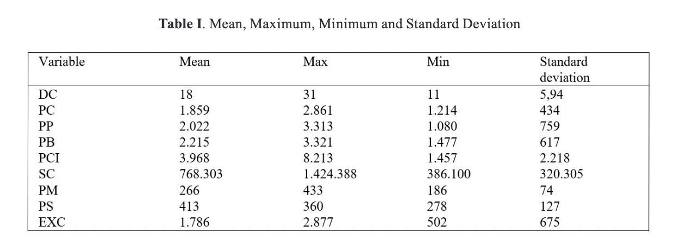
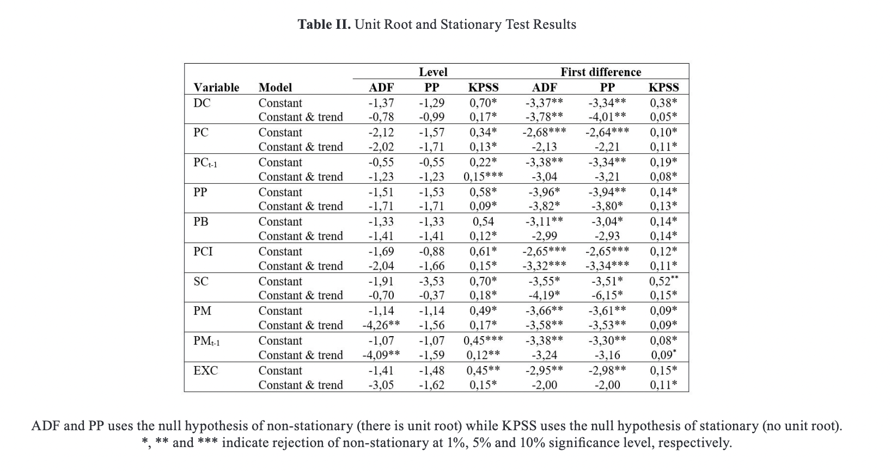
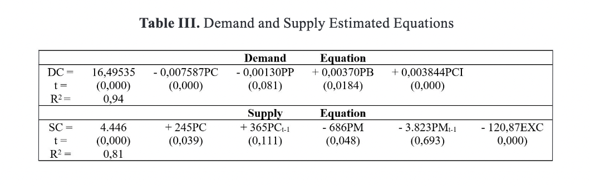
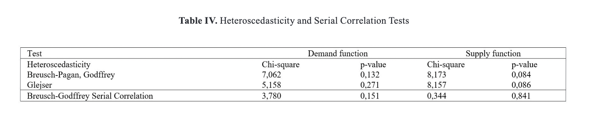
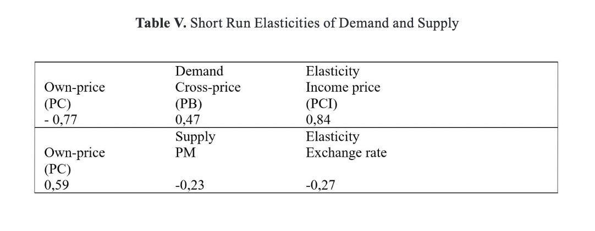

Introduction
Chicken meat is an important source of dietary protein for consumers and their increased awareness and preferences for healthy and balanced food
have been a strong driver of growth for the industry. It is one of the most widely animal-source food eaten globally and, over the last fifty years,
production has increased more than 12-fold [1].
Furthermore, chickens contribute with 89% of world poultry meat production and the largest producer is the United States of America (18% world
production) followed by China and Brazil [2]. The chicken meat chain involves production, processing and retailing and the industry plays
a major role in the economy as it provides employment opportunity and income generation.
In Colombia, it is one of the fastest growing industries and over the last ten years chicken meat reached 1,54 million tons, a 52,7% growth,
presenting the highest index of the continent. Moreover, the average per person consumption of chicken meat has consistently increased from
14,20 kg (2000) to 35,6 kg (2019) due most probably to prices and income factors [3] [2].
Several studies have concentrated on the variables that affect supply, demand and the elasticities of poultry individually. González, Rebollar
and Hernandez [4] assessed the sensitivity of demand for poultry meat in Mexico; Purcell [5] analyzed the changes in demand for beef, pork, and
chicken; Kapombe [6] estimated the supply response for broilers in the United Sates; Goodwin, Madrigal and Martin [7] estimated the impact of
economic variables on production, consumption, and prices in the U.S. however, only a few have focused on simultaneous estimation using two-stage
least squares techniques.
In this respect, due to the rise in demand and to the growing importance of the chicken meat production to the Colombian economy
the primary purpose of the study was to estimate the demand and supply response and the short run elasticities for chicken meat using a two-stage
least square technique for simultaneous equations.
Materials and methods
A descriptive, correlational and non-experimental design was selected to describe relationships among variables. The historical data used was
based on information from secondary sources: Food and Agriculture Organization (FAO) statistics, World Bank, Colombia ́s National Poultry
Federation and the Ministry of Agriculture. Time series data spanning from 1991 to 2015 were collected. The data and regression model were
analyzed using E-views® 9 package.
Unit root tests
The study performed the Augmented Dickey Fuller (ADF), the Phillips Perron (PP) and the Kwiatkowski, Phillips, Schmidt and Shin (KPSS) tests
in order to verify the presence of stationarity in the time series. The ADF and the PP approach consists in testing the null hypothesis for
the presence of non-stationarity implying that the time series have a unit root, whilst the KPSS, on the other hand, considers as null hypothesis
that the series are stationary.
Endogeneity and weak instrument tests
The Durbin-Wu-Hausmann test was also conducted in order to detect the presence of endogenous regressors so as to validate the use of a two-stage
least squares regression model. Moreover, the Cragg-Donald F-statistic was applied to evaluate the overall strength and validity of the instruments.
In this manner, the null hypothesis assumes that the instrument is weak against the alternative hypothesis of a strong instrument.
Diagnostic tests
The Breusch-Pagan, Godfrey (BPG) and Glejser tests were performed to assess the existence of heteroscedasticity (when the variance of
the error term in the regression model varies), whereas the Breusch-Godfrey LM test was conducted to examine the presence
of serial correlation.
Demand and supply model
A traditional way to model chicken meat demand and supply is to specify chicken production as a function of a measure
of predetermined variables. Thus, based on the classical microeconomic theory, it is assumed that a consumer behaves in such a way to optimize
an overall utility function subject to a budget constraint [8]. Therefore, the demand for chicken meat can be written as:
DCt = DC (PCt, PPt, PBt, PCI,)
where:
DCt = Estimated quantity of average per person consumption of chicken meat (Kilogram).
PCt = Prices paid by consumers for the purchase of chicken meat (USD/ton).
PPt and PBt = Prices of pork and beef meat (USD/ton), possible substitutes for chicken meat.
PCIt = Per capita income (USD).
As for supply, it is a function of chicken meat price, price of chicken feed, lagged chicken meat and feed price
(maize) and exchange rate. It is important, however, to note that chicken feed is mostly imported and accounts for an average 70% of
farmers production cost, thus exchange rate changes could raise the cost of agricultural inputs affecting farmers profitability [9].
As for the lagged independent variables, it is assumed that the production of chicken meat and feed are determined by the price expected
in the current time period and in the previous year [10] [11]. Subsequently, the supply for chicken meat is as follow:
SCt = SC (PCt, PCt-1, PMt, PMt-1, PSt, PSt-1, EXCRt)
where:
SCt = Estimated quantity of chicken meat production (ton).
PCt = Prices received by farmers for the sale of chicken meat (USD/ton).
PCt-1 = Lagged prices of chicken meat (USD/ton).
PMt = Prices paid by farmers for maize (USD/ton).
PMt-1 = Lagged prices of maize (USD).
EXCRt = Exchange rate defined as the trade value of the Colombian pesos versus theUnited States dollar ($/USD).
Econometric model specification
Following previous studies, the model specification was based on [10] with modifications, which consists of two equations - demand and
supply of chicken meat - and an identity equating demand and supply. Therefore, the general equations are as follow:
Demand for chicken meat per person
DCt = α1 +α2PCt + α3PPt + α4PBt + α5PCIt + υ (1)
Supply of chicken meat
SCt = β1 + β2PCt + β3PCt-1 + β4PMt + β5PMt-1 + β6EXCRt ++ μ (2)
Identity
SCt = DCt (3)
where t is the time subscript; β1 to β6 and α1 to α5 are the coefficients to be estimated; and μ and υ are error terms.
The model consists of three endogenous (SCt, DCt and PCt), and seven pre-determined variables (PCt-1, PMt, PMt-1, EXCRt, PPt, PBt, PCIt)
consequently, both the demand and supply equations are identified in rank and overidentified in order condition. Moreover, solving the system
for either price or quantity both structural equations shows that the error terms are correlated with the endogenous variables indicating that
the use of ordinary least squares regression (OLS) would lead to biased and inconsistent coefficients [12]. Therefore, the two stage least
squares (2SLS) procedure was used to estimate the structural parameters due to its effectiveness when compared to OLS but also because it is one
of the most used technique in the econometric literature for dealing with simultaneous equations [13].
The sign of each coefficient in (1) and (2) indicates the direction of the relationship between the independent and the response variable.
From this perspective, as the demand curve is hypothesized to be negatively sloped it is expected an inverse relationship between DC and PC
as an increase in chicken price would reduce quantity demand. On the other hand, an increase in PP or PB, potential substitute for chicken meat,
would tend to shift the demand for chicken upwards and increase chicken meat production levels. The coefficient on PCI should be positive as chicken
meat is considered a normal good in the sense that demand for chicken meat tends to be positively related to consumers' income.
In regards to the supply function, it is expected that an increase in PC and PCt-1 will rise SC; however, any changes in PMt, PMt-1 and EXCRt
will shift the supply function. These coefficients are a reflection of an inverse relationship with SC as an increase in chicken feed price and a
depreciation in exchange rate will consequently reduce chicken meat production levels. Likewise, the short run demand and supply elasticities were
calculated in order to measure the scope of response to changes in the variables.
Results and analysis
The data in table I presents the descriptive statistics of the variables used in the study, specifically focusing on chicken meat price and
production, per capita consumption and income, and chicken price feed (maize) for the period 1991-2015. The average price received
per ton of chicken meat sold was 1.859 with a minimum of USD 1.214 and a maximum of USD 2.861. Production reached a maximum level of 1.424.388
ton whilst the annual per capita consumption and income were 31 kg/person and 8.213 USD, respectively. As for chicken feed, prices presented an
upward trend due to the growing demand from the animal feed industry, specifically the poultry sector that accounts for 66 per cent of total feed
imports, reaching a maximum of 433 (USD/ton).

Unit root, endogeneity and weak instrument tests
According to [12] in order to provide valid statistical inference and avoid problems with spurious results, it is important to
examine the stationarity of the variables before proceeding with the estimation of the model. Therefore, all variables were tested using the
Augmented Dickey Fuller (ADF) and Phillips Perron (PP) unit root test as well as the Kwiatkowski, Phillips, Schmidt and Shin (KPSS) stationary test.
The results shown in table II indicate that in the level form for the ADF and PP all variables are higher than the critical values with the
exception of PM and PMt-1 where they are significant at a 5% level for constant and linear trend. For the KPSS test, all series have a stationary
property, even at a 10% level of significance. In the first difference, all variables are stationary around a constant, constant and linear trend
mostly at 5% and 10% (ADF and PP) and 1% (KPSS) significance level therefore, as a whole the results suggest that the series used are integrated
of order one I(1).
In regards to the Durbin-Wu-Hausmann endogeneity test the null hypothesis is rejected which confirms the assumption that PC is an endogenous variable.
Furthermore, when testing for weak instruments the Cragg Donald F-statistic (F= 33,43 for demand; F = 24,18 for supply), were well above the rule of
thumb guideline (F > 10), implying that the instruments are relevant.

Estimated models
Table III provides the 2SLS estimated results of the demand and supply proposed models as specified previously in (1) and (2).

Results showed that the p-values (p < 0,05) associated to the t-statistic of the explanatory variables are significant,
with the exception of PP, PCt-1 and PMt-1. The coefficients of determination (R-squared values) for the demand and supply
function were high however, [14] [15] argue that in system equations, it is not well defined; therefore, it is not a
goodness-of-fit indicator (Table III).
The demand equation generated coefficients with the expected signs for PC, PB and PCI and are theoretically correct; however,
this was not the case for PP. This suggests that an increase in own-prices will have a negative impact on demand; on the other
hand higher beef prices as well as rising consumers ́ incomes will lead to an increase in chicken meat production levels. For
the estimated supply quantity-dependent equation, all variables bear right signs. This indicates a direct relationship between
production levels and own and lagged-prices and an inverse one with exchange rate and chicken feed prices, therefore, if
chicken feed prices decreases the production of chicken meat should increase and vice-versa.
The Breusch-Pagan, Godfrey (BPG) and Glejser tests were applied on the two-equations ́ residuals and the null hypothesis for no
heteroscedasticity was not rejected. Moreover, there is a lack of evidence of serial correlation as the chi-squares
and p-values of the Breusch-Godffrey test are not significant suggesting the non-presence of autocorrelation (Table IV).

The short run elasticities calculated for the proposed demand and supply model are shown in table V. The own-price demand elasticity
for chicken meat indicates that if chicken meat price increase 1%, production will decrease 0,77 %. As for the cross-price elasticity
(Ɛdcp = 0,476), the study indicates that beef meat is a substitute for chicken meat and changes in prices will lead consumers to shift
toward a lower cost product. However, the cross-price elasticity of demand for chicken and pork had unexpected opposite signs
therefore, a concrete conclusion on the degree of competition or complementarity between both variables could not be reached.
Likewise, the value of income elasticity (Ɛdi = 0,84) was quite high suggesting that chicken meat is sensitive to changes in income.
Concerning the own-price supply elasticity of chicken meat an increase in price will induce producers to supply
larger quantities, thus a price increase of 1% will rise production in 0,59%. It is important to highlight that in related studies
supply response also showed an inelastic response to market prices [6] [16]). With regards to chicken feed and the exchange rate
elasticities both were low (-0,23 and -0,27, respectively) which would imply that they do not present a great impact on the percentage
changes of the quantity offered of chicken meat.

Conclusions
In conclusion, a simultaneous equation model of chicken meat demand and supply was specified and estimated using two-stage least
squares. The overall fits of the demand and supply equations were generally good.
Results indicated that chicken meat demand was responsive to changes in own and beef prices as well as income. The direction of the
independent variables were as expected and in accordance with the economic theory, with the exception of pork prices. On the other
hand, the response of chicken meat supply to own-price changes was found to be inelastic in the short run. Concerning chicken feed and
the exchange rate elasticities, they did not present a great impact on the percentage changes of the quantity offered of chicken meat.
Consequently, the proposed supply and demand model for chicken meat can be useful for producers, chicken meat companies managers and
policymakers as understanding the factors that affect the chicken market can lead to optimal managerial and financial decisions.
References
[1] Y. Aral, P. Demir, Y. Cevger and E. Aydin, "An economic assessment of the chicken meat/feed price interactions in Turkish broiler
sector," Journal of Animal and Veterniary Advances, 2010.
[2] Food and Agriculture Organization of the United Nations, "FAO Stats," [Online]. Available: http://www.fao.org/faostat/es/#data.
[Accessed January 2019].
[3] Federacion Nacional de Avicultores, "Statistical Information," [Online]. Available: https://fenavi.org/informacion-estadistica/.
[4] R. González, A. Rebollar, S. Rebollar, E. Rebollar and R. Hernandéz, "Econometric model of demand of poultry meat in Mexico city, 1996-2016,"
Octava Época, vol. 43, no. XXII, 2018.
[5] W. Purcell, "Measures of changes in demand for beef, pork and chicken," Research Institute on Livestock Pricing Agricultural and Applied
Economics. Research Buletin, 4, Virginia, 2000.
[6] C. Kapombe and D. Colyer, "Modeling U.S. Broiler Supply Response: A Structural Time Series Approach," Agricultural and Resource
Economics Review, vol. 27, no. 2, pp. 241-251, 1998.
[7] J. Goodwin, S. Madrigal and J. Martin, "Supply and demand responses in the U.S. broiler industry. Report Series 332," Agricultural Experimental
Station, Fayeteville, 1996.
[8] H. Varian, Microeconomía Intermedia, Barcelona: Antoni Bosch, 2016.
[9] R. Babula, F. Ruppel and D. Bessler, "U.S. corn exports: The role of the exchange rate," Agricultural Economics, vol. 12, pp. 75-88, 1995.
[10] U. Bhati, "Supply and demand responses for pultry meat in Australia," Australian Journal of Agricultural Economics, vol. 31, no. 3, pp. 256-265, 1987.
[11] S. Khan, M. Faisal, Z. Ul Haq, S. Fahad, G. Ali, A. Khan and I. Khan, "Supply response of rice using time series data: Lessons from Khyber
Pakhtunkhwa Province, Pakistan," Journal of the Saudi Society of Agricultural Sciences, vol. 18, no. 4, pp. 458-461, 2019.
[12] W. Greene, Econometric analysis, Oxford: Oxford University Press, 1991.
[13] D. Gujarati and D. Porter, Econometrics, México: McGraw Hill, 2010.
[14] R. Babula, "Economic effects of a countervailing duty order on the U.S. lamb meat industry," Agricultural and Resource Economics
Review, vol. 26, no. 1, pp. 82-93, 1997.
[15] R. Babula and L. Corey, "U.S. canned tuna supply and demand," Journal of Interanational Food & Agribusiness Marketing, vol. 16, no. 2, pp.
145-164, 2004.
[16] N. Childs and M. Hammig, "An empirical examination of the link between monetary policy and U.S. agricultural commodity exports," Applied Economics, vol. 21, pp. 155-173, 1989.

 MBA Independent Researcher, member of the Plant Biotechnology Group,
susancancino@hotmail.com.
MBA Independent Researcher, member of the Plant Biotechnology Group,
susancancino@hotmail.com.
 ORCID:
0000-0001-7827-8502.
University of Pamplona, Pamplona, Colombia.
ORCID:
0000-0001-7827-8502.
University of Pamplona, Pamplona, Colombia.